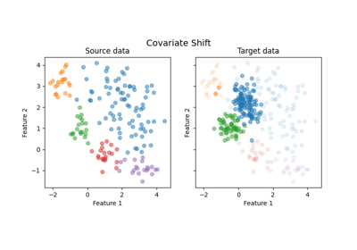
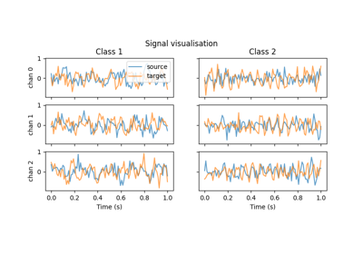
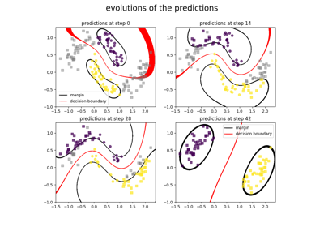
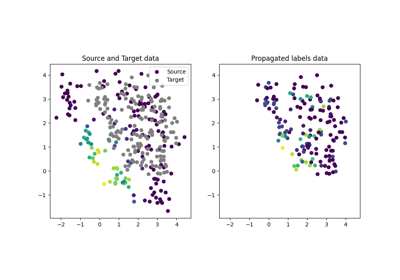
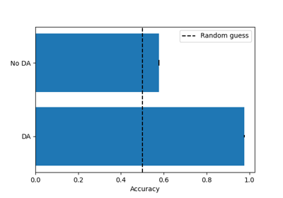

skada.source_target_split
- skada.source_target_split(*arrays, sample_domain)[source]
Split data into source and target domains
- Parameters:
- *arrayssequence of array-like of identical shape (n_samples, n_features)
Input features and target variable(s), and or sample_weights to be split. All arrays should have the same length except if None is given then a couple of None variables are returned to allow for optional sample_weight.
- sample_domainarray-like of shape (n_samples,)
Array specifying the domain labels for each sample.
- Returns:
- splitslist, length=2 * len(arrays)
List containing source-target split of inputs.
Examples using skada.source_target_split

Plot dataset source domain and shifted target domain
Plot dataset source domain and shifted target domain

Plot dataset source domain and shifted target domain
Plot dataset source domain and shifted target domain

Plot dataset source domain and shifted target domain
Plot dataset source domain and shifted target domain

Plot dataset source domain and shifted target domain
Plot dataset source domain and shifted target domain

DASVM classifier example


Label Propagation methods


Reweighting method example on covariate shift dataset
Reweighting method example on covariate shift dataset



Using cross_val_score with skada
Using cross_val_score with skada